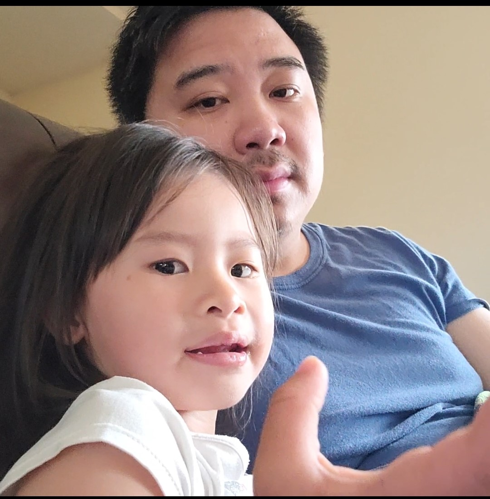
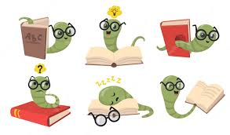

About Me
My name is Joseph Thao but you can call me Joey. I obtained a bachelor's degree in biology from the University of Arkansas Fort Smith. In the past, I worked in various jobs from turkey polutry farming to laboratory technician and finally to seafood quality assurance technician. I realized these fields wasn't for me so here I am writing my portofolio hoping to obatin a job in the tech field (By the way, so far I'm liking the tech field way more than what I was doing PREVIOUSLY!!!!!).
Hobbies:
I enjoy reading books, jogging at the park and playing around with my niece and nephews.
 Project
Relevant Experiences in Web Development: